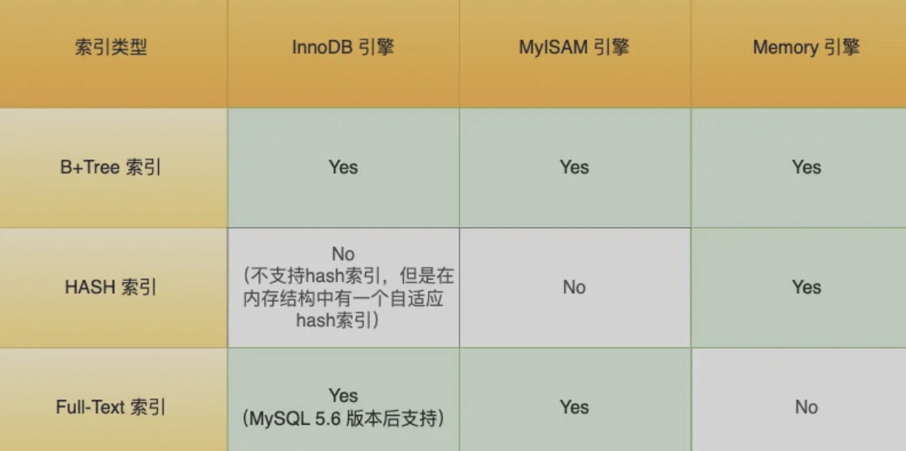
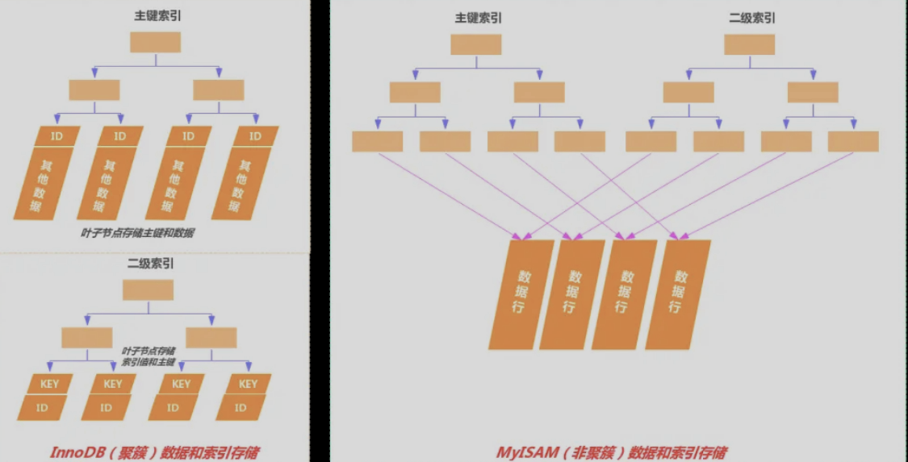
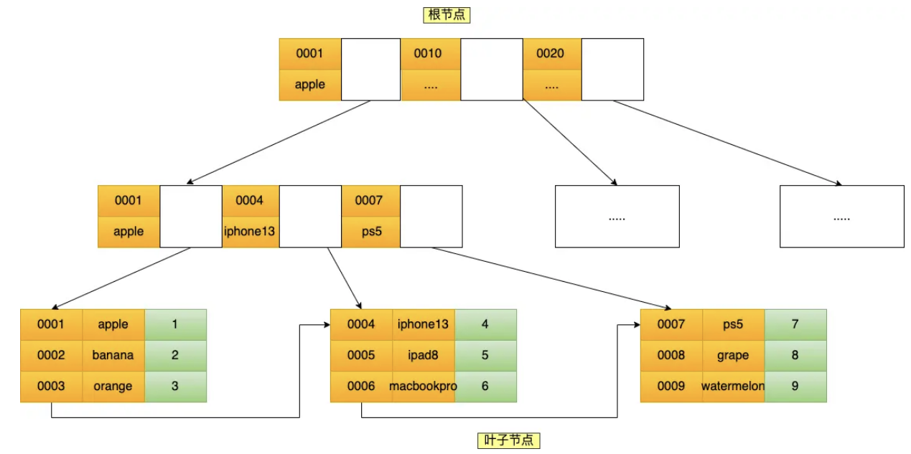
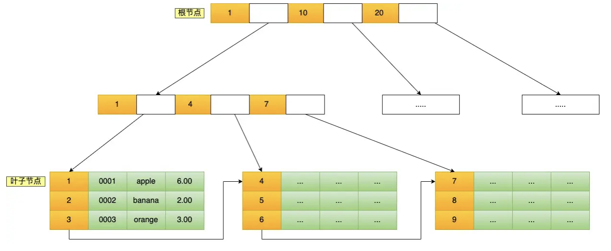

MySQL-索引
索引基础
定义
索引类似书籍的目录，可以减少扫描的数据量、提高查询的效率
- 如果查询时没有用到索引，那么就进行全表扫描，时间复杂度是O(n)
- 如果使用到索引，可以基于二分查找快速定位到目标数据，时间复杂度是O(logn)
分类相关
索引分类
- 数据结构：B+数索引、Hash索引、Full-text索引

- InnoDB存储引擎根据不同的场景选择不同列作为索引：聚簇索引必须有并且只能有一个
- 有主键，主键作为聚簇索引
- 无主键，选择第一个不包含null的唯一列作为聚簇索引
- 上面两个都没，自动生成一个隐式自增id列作为聚簇索引
- 物理存储：聚簇索引、非聚簇索引（二级索引）
- 聚簇索引：b+树的叶子节点存储的是实际数据，所有完整的用户记录都存放
- 二级索引：b+树的叶子节点存储的是主键值，而不是实际数据
- 在查询时，使用二级索引如果查询的数据可以在二级索引找到，就不需要回表，这个过程就是覆盖索引；如果查询的数据不在二级索引中，那么先查二级索引找到对应的主键值，然后再查找主键索引找到对应的数据，这就是回表
- 字段特性：主键索引、唯一索引、普通索引、前缀索引
- 主键索引：建立在主键上的索引，一个表最多只有一个，并且不允许有空值
- 唯一索引：建立在 UNIQUE 字段上的索引，一张表可以有多个唯一索引，索引列的值必须唯一但是可以有空值
- 普通索引：建立在普通字段上的索引，既不要求字段为主键，也不要求字段为 UNIQUE
- 前缀索引：对字符类型字段的前几个字符建立的索引，而不是在整个字段上建立的索引，对字符类型字段的前几个字符建立的索引，而不是在整个字段上建立的索引；目的是为了减少索引占用的存储空间，提升查询效率
- 字段个数：单列索引、联合索引
- 建立在单列上的索引
- 建立在多列上的索引，怎么构建？a和b的索引，先按照a进行排序建立好，如果a有相同的在根据b
- 最左匹配原则
聚簇索引和非聚簇索引对比

数据存储：存储整个数据行；存储主键
索引和数据关系：回表
唯一性：有且必须只有一个；不限
效率：范围查询和排序查询，聚簇索引效率更高，避免了寻址开销；非聚簇索引回表查询效率低
联合索引原理
多个列组合成一个索引，这就是联合索引

比如说使用a和b构建联合索引，先按照a进行排序建立好，如果a有相同的在根据b
查询的时候呢，先按照a字段进行比较，在a相同的情况下再按照b字段比较
使用联合索引满足最左匹配原则，按照最左优先的方式进行索引匹配
例子：建立了(a,b,c)联合索引
走索引：
a=x、a=x and b=x and c=x、a=x and c=x and b=x
索引失效：
b=x、b=x and c=x
a=xx and c<xxx a走索引 c走索引下推
b>xxx and a=xxx 走联合索引
a=2 and c=1 a走索引 c索引下推
建立联合索引的时候，区分度高、经常被使用的字段建议放到靠左边
优缺点
索引最大的好处是提高查询速度，但是索引也是有缺点的，比如
- 需要占用物理空间，数量越大，占用空间越大
- 创建索引和维护索引要耗费时间，这种时间随着数据量的增加而增大
- 会降低表的增删改的效率，因为每次增删改索引，B+ 树为了维护索引有序性，都需要进行动态维护
索引数据结构
MySQL索引如何实现
InnoDB使用B+树作为底层数据结构
B+树是一种多叉树，叶子节点存放数据，非叶子节点只存放索引，而且每个节点的数据是按主键顺序存储的；父节点的索引值都会出现在子节点中，因此叶子节点包含所有的索引值信息，每个叶子节点都有两个指针，形成双向链表

数据库索引和数据都是存储在磁盘的，每次读取节点可以看作一次磁盘IO，B+tree存储千万级数据只需要3-4层高度
B+树有什么特性
B+树是多叉树，主要特性如：
- 所有叶子节点都在同一层：可以确保所有数据项都是相同的磁盘IO，叶子节点之间形成双向链表，可以沿着叶子节点顺序访问，适合范围查询和排序扫描
- 非叶子节点仅存键值，不存储数据记录：主要用来帮助快速定位到正确的叶子节点，相比B树在数据量相同情况下，B+树非叶子节点能存储更多索引，相比更加矮胖
- 叶子节点存储数据记录
- 自平衡：插入、删除、更新后自动重新平衡，确保树的高度相对稳定
- M叉B+树，（除去根节点）每个节点最多有M个子节点，最少有ceil(M/2)个子节点
为什么使用B+树
可以先回答B+树的特性
对比B树、二叉树、红黑树、Hash、跳表
1、对比B树
- B+树叶子节点存储数据，非叶子节点只存储索引；B树叶子节点、非叶子节点都存储数据记录。因此在数据量相同的情况下，相比B树B+的非叶子节点可以存放更多索引，更加矮胖，查询节点的IO次数就会更少
- B+树叶子节点之间通过双向链表连接，有利于范围查询；而B树需要范围查询只能通过树的遍历来实现，涉及多个节点的磁盘IO
- 相比B树，B+树查询更稳定
2、对比二叉树、红黑树
- 二叉树父节点只能有两个子节点，构建起来更高，需要更多的磁盘IO查询，查询时间复杂度是O(log2n)
- N个叶子节点、最大子节点个数位d的B+树查询时间复杂度为O(logdN)，实际上d大于100，可以保证千万级数据高度维持在3-4层
3、对比Hash
- Hash等值查询速率很快，复杂度为O(1)，但是不使用范围查询，应用场景不如B+树
4、对比跳表 skip
- 千万级数据B+树3-4层就可以实现，但是对于跳表而言会导致跳表层数过高，磁盘IO次数就更高，效率低
- 跳表的增删改需要维护多级索引，磁盘 IO 的修改成本远高于 B + 树（B + 树仅需修改叶子节点 + 少量父节点，跳表可能修改多个层级的索引
索引优化
索引如何选择
回答什么字段适合建立索引
-
字段唯一、非空、区分度高
-
经常作为查询条件、排序、分组、去重的字段
-
字段最好有递增趋势，如果字段是随机无序的，可能会引发页分裂问题，造成性能影响
如果是随机无序的，那么写入的顺序就是乱序的，不得不频繁的做页分裂操作，以便为新行分配空间，页分裂导致移动大量的数据，影响性能
而且频繁的页分裂，页会变的稀疏并被不规则的填充，最终会导致数据有sui’pian
-
超长文本字段不建议建立索引，如果必须建立的话考虑前缀索引
-
尽量选择建立联合索引
索引失效
-
对索引进行 函数运算、表达式运算；（索引保存的是原始值）
-
索引列进行了隐式类型转换，比如字符串和数字，内部调用了case函数
-
使用否定、左或者左右模糊查询，
%xx、%xx%；否定查询需要遍历所有不满足条件的分支，优化器判断成本高于全表扫描
LIKE '%xxx'是 “后缀匹配”，B + 树按列值前缀排序，无法通过索引定位后缀相同的数据 -
联合索引违反最左匹配原则
-
范围查询(> < between)导致右侧索引失效(a>xx and b=x)；
范围查询会定位到 B + 树的一个 区间，区间内的
b列值不再保持全局有序 -
OR条件包含非索引列
OR的逻辑是满足任一条件即可，若其中一列无索引，MySQL 无法通过索引快速筛选所有满足条件的行，只能全表扫描
怎么看走不走索引的？
- 用
EXPLAIN分析查询语句，看type列（ALL表示全表扫描，索引失效；ref/range表示索引生效）； - 看
key列：显示实际使用的索引名（NULL表示索引失效）； - 看
rows列：预估扫描行数，行数接近表总行数说明索引失效。
索引优化详细
索引优化应该围绕【减少磁盘 IO、避免回表、防止索引失效】这些方面展开吧
-
前缀索引优化
对大字符串字段（如
VARCHAR/TEXT），只取前 N 个字符建索引，减小索引体积，让单个磁盘页存更多索引值，降低 IO 次数 -
覆盖索引优化
让索引包含查询所需的所有字段（
SELECT+WHERE+ORDER BY），直接从二级索引取数据，避免回表查聚簇索引，减少一次 IO按最左匹配原则组合高频查询字段，比如
WHERE a=1 ORDER BY b，就建idx_a_b(a,b) -
主键自增优化
如果我们使用自增主键，那么每次插入的新数据就会按顺序添加到当前索引节点的位置，不需要移动已有的数据，当页面写满，就会自动开辟一个新页面。因为每次插入一条新记录，都是追加操作，不需要重新移动数据，因此这种插入数据的方法效率非常高。
如果我们使用非自增主键，由于每次插入主键的索引值都是随机的，因此每次插入新的数据时，就可能会插入到现有数据页中间的某个位置，这将不得不移动其它数据来满足新数据的插入，甚至需要从一个页面复制数据到另外一个页面，我们通常将这种情况称为页分裂。页分裂还有可能会造成大量的内存碎片，导致索引结构不紧凑，从而影响查询效率。
-
防止索引失效
详情见索引失效
-
避免建立过多索引
一张表索引≤5 个，减少写入维护开销
缺点
- 需要占用物理空间，数量越大，占用空间越大
- 创建索引和维护索引要耗费时间，这种时间随着数据量的增加而增大
- 会降低表的增删改的效率，因为每次增删改索引，B+ 树为了维护索引有序性，都需要进行动态维护